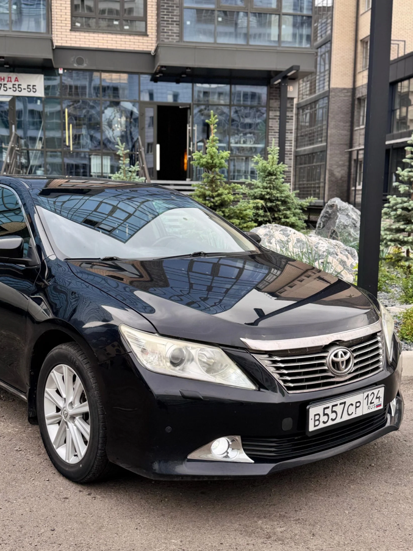
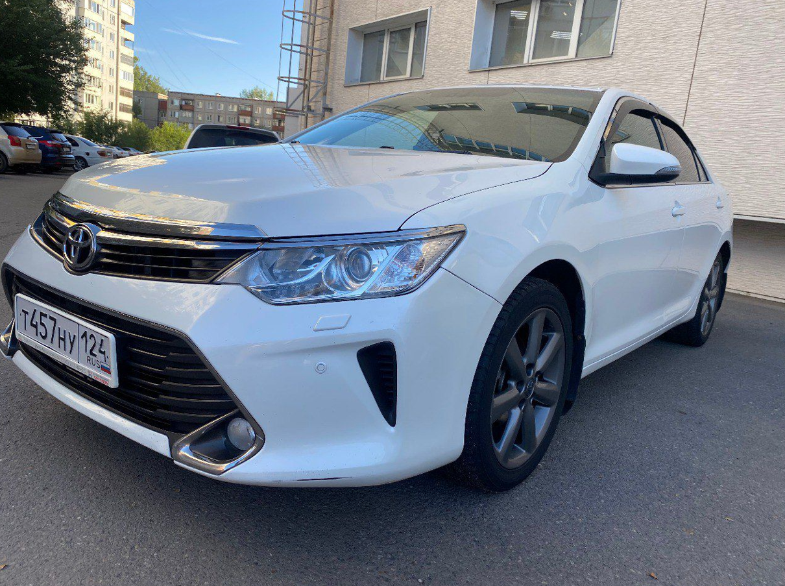
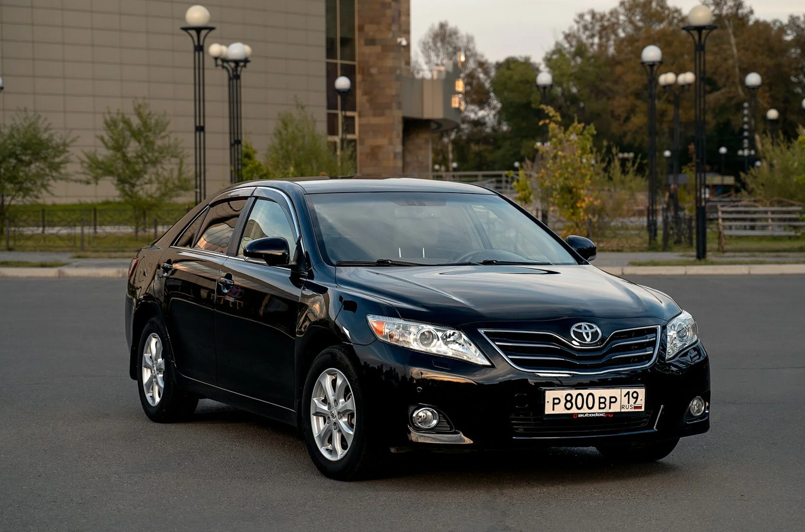

Аренда автомобилей в Абакане с премиальным сервисом
Выберите автомобиль для города, поездок по Хакасии и дальних маршрутов. Все машины готовы к аренде — без лишних формальностей.
НАШ
АВТОПАРК
Автомобили для аренды в Абакане, поездок по Хакасии и маршрутов за пределами города. Подберите подходящий вариант по классу, комфорту и бюджету.
 ПРЕМИУМ
ПРЕМИУМ
Toyota Land Cruiser 200
 ПРЕМИУМ
ПРЕМИУМ
Toyota Land Cruiser 200 с водителем
 ПРЕМИУМ
ПРЕМИУМ
Mercedes Benz E-300
 ПРЕМИУМ
ПРЕМИУМ
Toyota Camry

КОМФОРТToyota Camry

КОМФОРТToyota Camry
 КОМФОРТ
КОМФОРТ
Toyota RAV 4
 КОМФОРТ
КОМФОРТ
Toyota Camry
Hyundai Solaris
 ЭКОНОМ
ЭКОНОМ
Kia Rio
 ЭКОНОМ
ЭКОНОМ
Honda Stepwgn Spada

ЭКОНОМToyota Camry
Прокат автомобилей в Абакане
RioCar предлагает аренду автомобилей в Абакане для поездок по городу, путешествий по Хакасии и дальних маршрутов. В автопарке представлены автомобили разных классов — от эконом до премиум.
Вы можете арендовать автомобиль без водителя или заказать машину с водителем. Мы подберём оптимальный вариант под ваши задачи и бюджет.